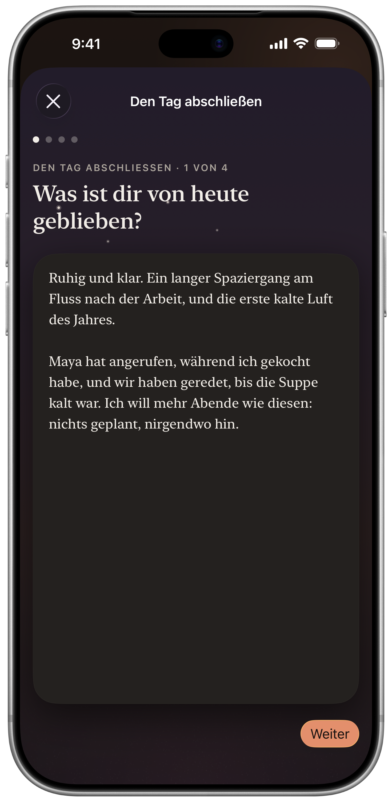
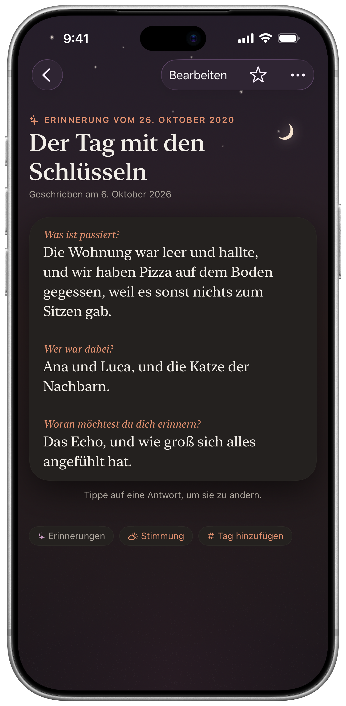
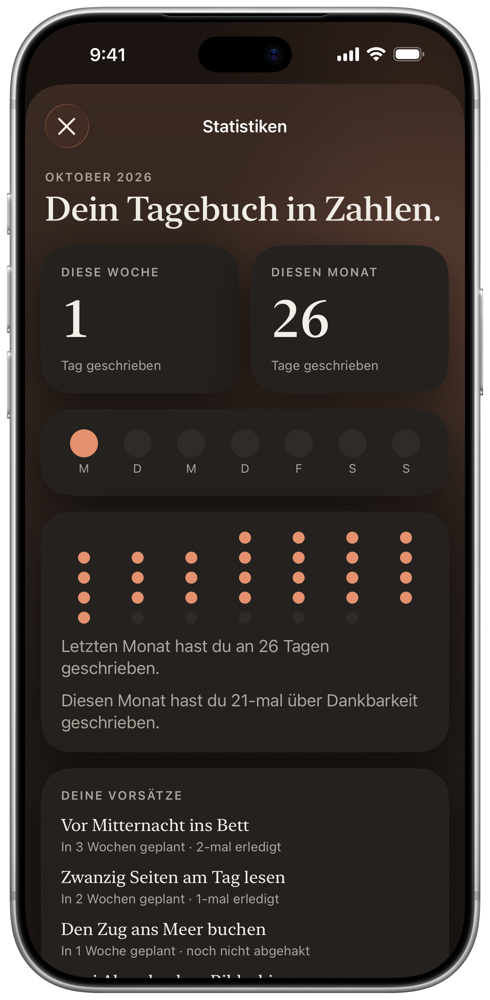

Abends21:15 Uhr
Lass den Tag ausklingen.
Vier kurze Fragen vor dem Schlafengehen, und jede davon kannst du überspringen. Ein Wort oder eine ganze Seite: Der Tag ist festgehalten.

Jahre späterAm selben Tag
Die Vergangenheit kommt von selbst zurück.
Halte eine Erinnerung mit dem Tag fest, an dem sie wirklich passiert ist: deine erste Wohnung, ein Sommer vor vielen Jahren. Jedes Jahr an diesem Datum bringt Velunda sie dir zurück.

Über die MonateDeine Gewohnheiten, keine Punktzahl
Lerne dich besser kennen.
Wie oft du schreibst, worauf du immer wieder zurückkommst, wie sich deine Stimmung mit der Zeit verändert. Alles direkt auf deinem Gerät berechnet. Keine Serie, die du halten musst, keine Punkte, denen du nachjagst.
